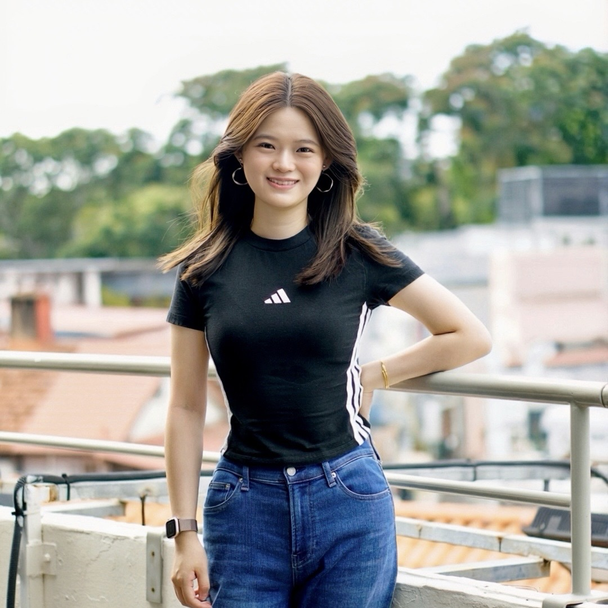

Yi Sun
Research Fellow
National Institute of Education, NTU
Research Interests
- Well-Being
- Teacher Emotion
- Social-Emotional Learning
- Longitudinal Social Networks
About Me
I am a Research Fellow at the National Institute of Education (NIE), Nanyang Technological University, Singapore, where I work on the DREAMS project (DRivers, Enablers, and pathways of Adolescent developMent in Singapore) . I received my Ph.D. from The Chinese University of Hong Kong.
My research explores well-being in school settings, with two main lines of inquiry: (1) Teacher emotion. I examine teachers’ emotion regulation and professional well-being, and design interventions to support their social-emotional competence. (2) Adolescent social networks. I investigate the longitudinal dynamics of peer relationships: how they evolve over time and how peer network attributes relate to students’ academic, motivational, social, and emotional outcomes.
I am open to research collaborations. If you are interested in my work, please feel free to contact me via email: sunyi.research@gmail.com.
Research Focus
Teacher Emotion
Factors associated with teachers’ emotion regulation and professional well-being; how emotion regulation functions in teachers’ day-to-day professional lives; and the design of educational interventions to support teachers’ social-emotional competence.
Adolescent Social Networks
The longitudinal dynamics of peer relationships, including how students’ social relationships evolve over time, the contextual factors that shape peer relationships, and how peer network attributes are associated with students’ academic, motivational, social, and emotional outcomes.
Keywords: Well-being, emotion, social-emotional learning, social networks, peer relations, professional development, teacher, adolescents, longitudinal study
News
Publications
(*corresponding author)
Education
Ph.D. in Education
The Chinese University of Hong Kong
2022 – 2025
M.Ed. in Curriculum and Instruction (Research Master)
Zhejiang University
2019 – 2022
B.Ed. in Primary Education
Wenzhou University
2015 – 2019
Academic Service
Ad-hoc Journal Reviewer
2025 – Present · Teaching and Teacher Education; European Journal of Education; The Asia-Pacific Education Researcher; Frontiers in Education.
Member
2025–2026 · American Educational Research Association (AERA)
Guest Speaker
Spring 2025 · The Chinese University of Hong Kong. Delivered a guest lecture for PEDU 7301 Curriculum Inquiry on theoretical typologies of emotion regulation and educational implications.
Workshop Facilitator / Teaching Assistant
Spring 2025 · ARISE Project (觉心计划) (Shenzhen, China). Conducted professional development for kindergarten teachers on social-emotional learning.
Skills
Data Analysis
Proficient in R, Mplus, and SPSS. Experienced in managing and analyzing large-scale and complex datasets.
Languages
English (Fluent); Chinese (Mandarin: Native; Cantonese: Proficient).
Contact
Contact Information
- sunyi.research@gmail.com
- NIE3-B1-22, National Institute of Education, Nanyang Walk, Singapore 637616